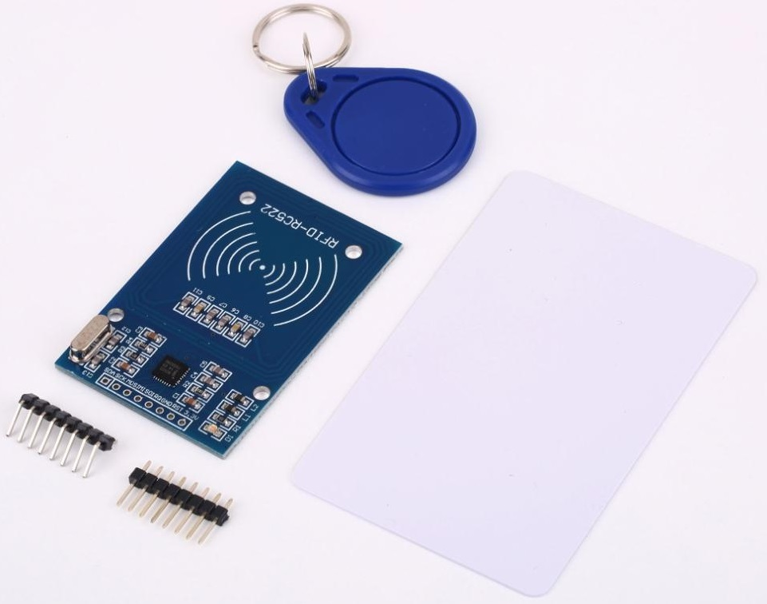
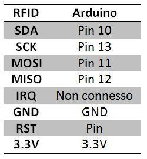

Questo dispositivo permette di leggere le schede RFID a 13.56MHz. Ogni tag RFID contiene un a stringa di 8 caratteri.


#include <SPI.h>
#include <MFRC522.h>
/*modifico i pin dei ss e rst*/
#define SS_PIN 10
#define RST_PIN 9
MFRC522 mfrc522(SS_PIN, RST_PIN); // Create MFRC522 instance.
long previousMillis = 0;
long interval = 10;
void setup() {
Serial.begin(9600); // Initialize serial communications with the PC
SPI.begin(); // Init SPI bus
mfrc522.PCD_Init(); // Init MFRC522 card
Serial.println("Avvicina il tag RFID");
Serial.println("In attesa di lettura...");
}
void loop() {
unsigned long currentMillis = millis();
if(currentMillis - previousMillis > interval) {
previousMillis = currentMillis;
// Look for new cards
if ( ! mfrc522.PICC_IsNewCardPresent()) return;
// Select one of the cards
if ( ! mfrc522.PICC_ReadCardSerial()) return;
String uid_s = "";
if (!mfrc522.PICC_IsNewCardPresent() && !mfrc522.PICC_ReadCardSerial()) {
for (byte i = 0; i < mfrc522.uid.size; i++) {
String uid_a = String(mfrc522.uid.uidByte[i] < 0x10 ? "0" : "");
String uid_b = String(mfrc522.uid.uidByte[i], HEX);
uid_s = uid_s+uid_a+uid_b;
}
}
Serial.print("RFID UID rivelato --> ");
Serial.println(uid_s);
Serial.println("");
Serial.println();
Serial.println("In attesa di lettura...");
}
}
{kind=link}